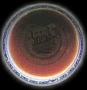

黑茶及其特性
按茶色不同来分类——黑茶：

由于原料粗老，黑茶加工制造过程中一般堆积发酵时间较长，因为叶色多呈暗谒色，故称黑茶。
此茶主要供一些少数民族饮用，藏族、蒙古族和维吾尔族群众喜好饮黑茶，是日常生活中的必需品。在加工工艺上，黑茶也有自己独特的工艺。黑茶产区广阔，品种花色很多，有湖南黑茶加工的黑砖、花砖、茯砖，湖北老青茶加工的青砖茶、广西六堡茶、四川的西路边茶、云南的紧茶、扁茶、方茶和圆茶等。
各类黑茶名：湘尖、湖南黑茶；老青茶；四川边茶；六堡散茶；普洱茶、黑砖茶、获砖茶、康砖子等。